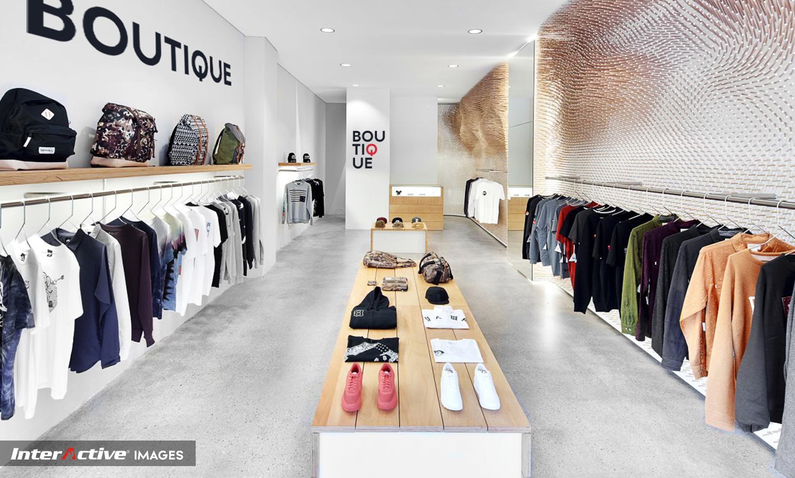
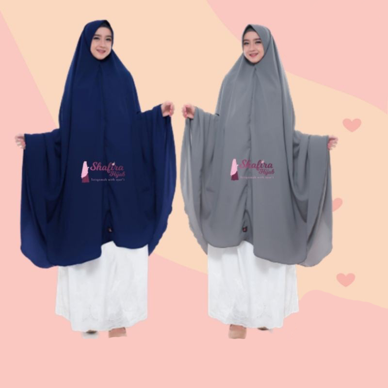
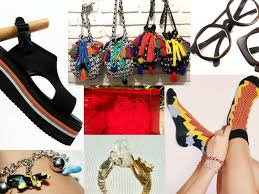

Pengertian Fhasion
Busana Boutique atau yang sering kita sebut dengan fhasion adalah merupakan sebuah ekspresi yang populer pada wqaktu, masa, tempat tertentu dalam kontrak tertentu, terutama pada pakaian, alas kaki, gaya hidup aksesoris, riasan wajah, gaya rambut,dan proporsi tubuh.
Jenis Fhasion

1. Muslimah
2. Blush
3. Kemeja
5. koko
6. Tunik
7. Blazer
pPengertian Jenis Bahan/kain

Tekstil adalah material fleksibel yang terbuat dari tenunan benang. Tekstil dibentuk dengan cara penyulaman, penjahitan, pengikatan, dan cara ''pressing''. Istilah tekstil dalam pemakaiannya sehari-hari sering disamakan dengan istilah kain. dan berikut adalah contoh dari jenis-jenis kain :
1. Baby Canvas
2. Denim
3. Drill
4. Linen
5. Katun
5. Lycra
6. Organza
7. Polyester
Fhasion Muslimah
Busana muslim adalah berbagai jenis busana yang dipakai oleh wanita muslimah sesuai dengan ketentuan syariat Islam, dimaksud untuk menutupi bagian-bagian tubuh yang tidak pantas untuk diperlihatkan kepada publik. berikut adalah contoh dari busana muslimah :
1. Jilbab syar'i
2. Cadar
3. Gamis Sya'i
4. cadar
5. Hijab Niqab
Fhasion Asesoris
Dalam dunia busana, aksesori (atau aksesoris) adalah benda-benda yang dikenakan seseorang untuk mendukung atau menjadi pengganti pakaian. Bentuk aksesori bermacam-macam dan banyak di antaranya terkait dengan peran gender pemakainya. contoh-contoh dari fhasion asesoris adalah :
1. Gelang
2. Sepatu
3. Tas
4. Jam Tangan
5. kalung